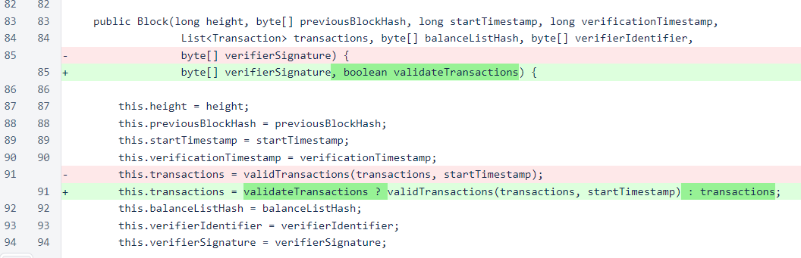
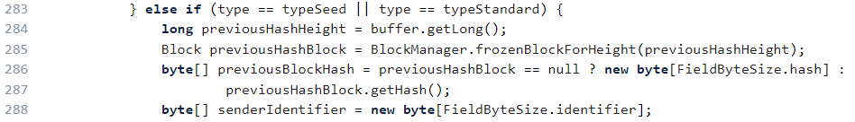
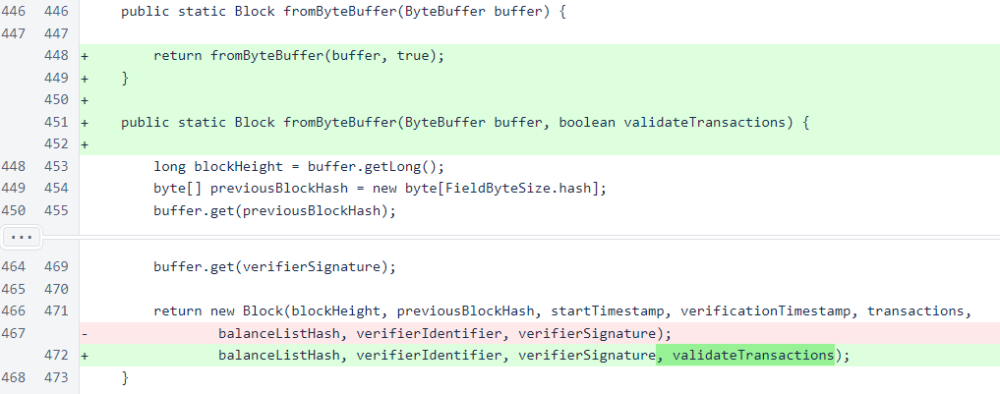
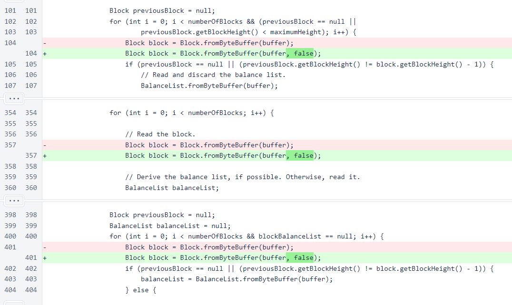
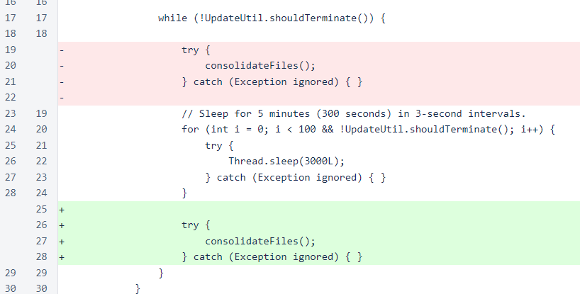

Nyzo version 499 (commit on GitHub) corrects issues with the block-file consolidation process.
This version affects both the verifier and the sentinel.
In development of the server process that uploads files to s3 for the block-file page, we discovered that many of the consolidated files on verifiers contained blocks that were invalid due to missing transactions. There are multiple complete, valid, independently verifiable copies of every block and every transaction since the beginning of the Nyzo blockchain, including the full copy available on s3, but many verifiers are not currently maintaining such copies automatically. This version corrects that problem.
Also, this version makes a minor change to the block-file consolidator that should reduce the occurrence of out-of-memory problems in the verifier initialization process.
The core of this version is the addition of the validateTransactions argument to one of the constructors of the Block class. If a true value is provided for this argument, the constructor behaves as it did before. If a false value is provided for this argument, the constructor accepts the list of transactions without additional validation.
This change was necessary because of the previous-block-hash field included in transactions. If a verifier cannot verify that the previous-block hash is a hash for a block in this blockchain, the transaction is rejected. During the production of blocks, availability of referenced blocks is seldom a problem. However, the verifier now bundles blocks into consolidated files after the section of 1000 blocks falls behind the retention edge. This means that the previous-block hashes of many transactions that were already approved and incorporated into frozen blocks can no longer be verified cheaply by the verifier when consolidation takes place. This was causing some transactions in historical blocks to be removed from those blocks, thereby corrupting the blocks, during the consolidation process.
For those wishing to see the precise mechanics of the failure, and to see why this fix is viable, the fromByteBuffer method of the Transaction class is a good place to start. In this method, we see that the block height of the previous-block hash is read from the byte buffer, and the hash is retrieved by fetching the block from the BlockManager class. This is where an all-zero hash is assigned if the referenced block is now behind the retention edge. This all-zero hash will cause the transaction to fail signature validation.
However, all of the other fields of the transaction are correct, and the previous-block hash is not included in the serialized form of the transaction, so as long as transaction validation is disabled between the reading of blocks from one file and the writing of those blocks to another file, the transactions will pass through the consolidation process without issue.
Back to the code changes in this version, two more modifications have been made to the Block class. The fromByteBuffer() method has also been given a validateTransactions argument. This argument is passed through to the constructor. An overload of fromByteBuffer() has the same signature as the old version of the method, and it passes a value of true for transaction to the modified version of the method. This means that all calls to this method on the old signature behave exactly as they did before.
In the BlockManager class, transaction validation is now disabled in three methods: loadBlocksInFile(), extractConsolidatedFile(), and loadBalanceListFromFile().
Also, in a related change, the order of the sleep and the consolidateFiles() call have been switched in the BlockFileConsolidator processing thread. The consolidator still tries to consolidate files every five minutes, but the first attempt is now made five minutes after a verifier restart. Verifier initialization is more memory-intensive than normal verifier operation. A verifier with limited memory could potentially experience an out-of-memory condition if it attempted to consolidate block files during the verifier initialization process.
For the suggestion that the block-file consolidation process might be involved in the out-of-memory conditions experienced by some verifiers in the initialization process, ∩10,000 was awarded to 0a05...01ed.